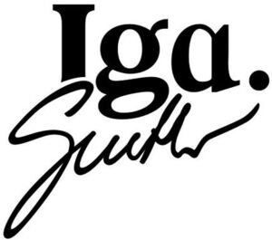

Trade Mark Journal No.2026/008 20 February 2026
WO0000001889416 (3,5,9,14,16,18,21,25,28,29,30,32,35,36,37,41,43)
Office of origin: European Union Intellectual Property Office (EUIPO)
Date of International Registration:28 May 2025
Date of designation in the UK:
28 May 2025

- Class 3
- Ethereal essences and oils; essential oil-based creams for aromatherapy use; perfumes; toilet water; barrier creams; cosmetic creams; conditioning creams; creams for tanning the skin; perfumed creams; moisturising creams; camouflage cream; beauty balm creams; toning creams [cosmetic]; nail cream; depilatory creams; fluid creams [cosmetics]; body firming creams; skin whitening creams; hair protection creams; creams for tanning the skin; creams (non-medicated -) for the eyes; cosmetic creams and lotions; fair complexion creams; tooth whitening creams; creams for fixing hair; cosmetic hand creams; skin cleansing cream [non-medicated]; anti-aging creams; sun protecting creams [cosmetics]; recovery creams for cosmetic use; cold creams for cosmetic use; massage creams, not medicated; scented body lotions and creams; non-medicated face care preparations; products for protecting coloured hair; eye care products, non-medicated; cosmetic products in the form of aerosols for skincare; skin care preparations; soaps for body care; beauty care cosmetics; hair preparations and treatments; non-medicated body care preparations; cosmetics; shampoos; toiletries; sanitary preparations being toiletries.
- Class 5
- Protective creams (medicated -); creams (medicated -) for the feet; herbal creams for medical use; acne creams [pharmaceutical preparations]; hygienic lubricants; sanitary preparations and articles; food supplements; food supplements; dietary and nutritional supplements; dietary and nutritional preparations; dietary supplemental drinks; dietary supplements and dietetic preparations; dietetic foods adapted for medical purposes; food supplements for sportsmen; nutritional supplement meal replacement bars for boosting energy; pharmaceutical preparations for treating sports injuries.
- Class 9
- Prescription eyeglasses; spectacle frames; glasses, sunglasses and contact lenses; safety helmets; protective helmets for sports; protective masks, not for medical purposes; visors for helmets; DVDs; magnetic data media; data storage media; electronic data carriers; computer software applications, downloadable; downloadable mobile applications for use with wearable computer devices; software; bags adapted for laptops; covers for tablet computers; cases for telephones; covers for glasses; cases for headphones; cases adapted for computers; cases adapted for photographic equipment; cases for electronic diaries; covers for sunglasses; cases adapted for photographic equipment; cases for tablet computers; cases for smartphones; covers for data storage devices; computers; leather cases for tablet computers; leather cases for smartphones; pre-recorded DVDs featuring games; video games [computer games] in the form of computer programs recorded on data carriers; mobile apps; virtual reality game software; virtual reality hardware; virtual reality software for education; apparatus for generating virtual images; electronic sports training simulators [computer hardware and software-based teaching apparatus]; sports betting applications; electronic pens for visual display units; encoded gift cards; electronic notebooks; encoded loyalty cards; software for operating an online shop; tablet computers; smartphones.
- Class 14
- Jewellery; watches; precious metals; semi-worked precious metals; processed or semi-processed precious metals; key rings [split rings with trinket or decorative fob]; semi-precious articles of bijouterie; decorative articles [trinkets or jewellery] for personal use; hat jewellery; sports watches.
- Class 16
- Paper; note books; pens; penholders; pencil cases; workbooks containing exercises; boxes of paper or cardboard; labels of paper or cardboard; paper stationery; office stationery; manuals for instructional purposes; printed educational materials; printed training materials; printed stationery; printed teaching materials; catalogues; cardboard packaging; books; periodicals; posters; gift cards; notepads; jotters; paper loyalty cards.
- Class 18
- Carrying cases for documents; leather suitcases; leather wallets; leathercloth; handbags made of leather; leather coin purses; travelling sets [leatherware]; document cases of leather; card holders made of leather; school knapsacks; bags; handbags; attaché cases; rucksacks; luggage; cosmetic purses; umbrellas and parasols; felt pouches; bags for sports; holdalls for sports clothing.
- Class 21
- Mugs; cups; dishes; bottles; pots; kitchen utensils, not of precious metal; coasters, not of paper or textile; porcelain coasters; drinks containers; containers for household or kitchen use; mug cosies; porcelain; kitchen utensils; glass cups; glasses [receptacles]; vacuum flasks for holding drinks; articles for the care of clothing and footwear, namely brushes and polishing cloth.
- Class 25
- Sports caps and hats; visors being headwear; cap peaks; sun visors; visors; peaked caps; sweatbands; headbands [clothing]; sweat bands for the wrist; tennis sweatbands; shoes; footwear for women; casual footwear; sports shoes; footwear for women; tennis shoes; training shoes; leisure shoes; sports shoes; millinery; sun hats; beach hats; underpants; tops [clothing]; sweaters; waist belts; shawls; underwear; lingerie; sports pants; sweat shorts; sports bras; sports jackets; sports caps; baseball caps; footwear for women; sports shoes; sneakers; sportswear incorporating digital sensors; leisure suits; sports headgear [other than helmets]; clothing of leather; leather shoes; leather jackets; leather jackets; trousers of leather; leather dresses; leather headwear; sportswear; loungewear; weatherproof clothing; weatherproof clothing; windproof clothing; linen clothing; silk clothing; girls' clothing; jackets [clothing]; kerchiefs [clothing]; clothing for gymnastics; shorts; belts [clothing]; ladies' clothing; gloves [clothing]; tennis wear; nightwear; running suits; face mask [clothing]; shirts; casual shirts; casual shirts; button down shirts; dress shirts; polo shirts; tank tops; printed t-shirts; tennis shirts; moisture-wicking sports shirts; short-sleeve shirts; long-sleeved shirts; shirts and slips; polo knit tops; sports shirts with short sleeves; running vests; camiknickers; trousers; shorts; tennis skirts; socks.
- Class 28
- Novelty toys for parties; tennis rackets; games; sports games; counters [discs] for games; automatic electronic games; hand-held electronic games; hand-held consoles for playing video games; toys, games, and playthings; parlour games; electronic activity toys; sporting articles; tennis balls; tennis rackets; tennis uprights; tennis nets; tennis racket strings; tennis racket strings; tennis racket covers; shaped covers for tennis rackets; grip bands for tennis rackets; tennis ball throwing apparatus; vibration dampeners for tennis rackets; tennis bags shaped to contain a racket; sporting articles and equipment; video game consoles.
- Class 29
- Cocoa butter for food; fruit-based snack food; vegetable-based snack food; soups; prepared meals consisting substantially of seafood; prepared meals consisting primarily of meat substitutes; prepared meals made from meat [meat predominating]; frozen prepared meals consisting principally of vegetables; vegetable chips; potato crisps; prepared vegetable dishes; prepared meat dishes; prepared meals consisting primarily of fish; prepared vegetable products.
- Class 30
- Gluten-free bakery products; coffee; tea; cocoa; coffee-based beverages; cocoa-based beverages; cereal-based snack food; flour based savory snacks; confectionery; preparations made from cereals; bread biscuits; sweetmeats [candy]; flaked wheat; breakfast cereals; oat flakes; barley flakes; corn flakes; corn flakes; breakfast cereals made of rice; cake batter; ice milk [ice cream]; fruit ices; ice cream; vegan ice cream; edible ices; non-dairy ice cream; pasta dishes; muesli; muesli bars; muesli desserts; sugar, honey, treacle; rice tapioca; candy bars; cereal bars and energy bars; chocolate; bread rolls; cakes; sugar.
- Class 32
- Soft drinks; soft drinks; isotonic beverages; waters [beverages]; protein drinks; colas [soft drinks]; carbonated non-alcoholic drinks; low-calorie soft drinks; cocktails, non-alcoholic; non-alcoholic beer; alcohol free wine; fruit nectars, non-alcoholic; non-carbonated soft drinks; non-alcoholic fruit extracts; kvass [non-alcoholic beverage]; non-alcoholic beverages containing fruit juices; non-alcoholic beverages flavoured with tea; non-alcoholic beverages flavoured with coffee; non-alcoholic vegetable juice drinks; concentrates for use in the preparation of soft drinks; vitamin fortified non-alcoholic beverages; mineral water [beverages]; aerated water; energy drinks; syrups for beverages; vegetable juices [beverages]; protein-enriched sports beverages; sports drinks containing electrolytes.
- Class 35
- Retail services in relation to trousers of leather; retail services in relation to leather dresses; retail services in relation to leather headwear; retail services in relation to sportswear; retail services in relation to loungewear; retail services in relation to weatherproof clothing; retail services in relation to weatherproof clothing; retail services in relation to windproof clothing; retail services in relation to linen clothing; retail services in relation to silk clothing; retail services in relation to girls' clothing; retail services in relation to jackets [clothing]; retail services in relation to kerchiefs [clothing]; retail services in relation to clothing for gymnastics; retail services in relation to shorts; retail services in relation to belts [clothing]; retail services in relation to ladies' clothing; retail services in relation to gloves [clothing]; retail services in relation to tennis wear; retail services in relation to nightwear; retail services in relation to running suits; retail services in relation to face mask [clothing]; retail services in relation to shirts; retail services in relation to casual shirts; retail services in relation to casual shirts; retail services in relation to button down shirts; retail services in relation to dress shirts; retail services in relation to polo shirts; retail services in relation to tank tops; retail services in relation to printed t-shirts; retail services in relation to tennis shirts; retail services in relation to moisture-wicking sports shirts; retail services in relation to short-sleeve shirts; retail services in relation to long-sleeved shirts; retail services in relation to shirts and slips; retail services in relation to polo knit tops; wholesale services in relation to cases for smartphones; wholesale services in relation to covers for data storage devices; wholesale services in relation to computers; wholesale services in relation to leather cases for tablet computers; wholesale services in relation to leather cases for smartphones; wholesale services in relation to pre-recorded DVDs featuring games; wholesale services in relation to video games [computer games] in the form of computer programs recorded on data carriers; wholesale services in relation to mobile apps; wholesale services in relation to virtual reality game software; wholesale services in relation to virtual reality hardware; wholesale services in relation to virtual reality software for education; wholesale services in relation to apparatus for generating virtual images; wholesale services in relation to electronic sports training simulators [computer hardware and software-based teaching apparatus]; wholesale services in relation to sports betting applications; wholesale services in relation to electronic pens; wholesale services in relation to electronic notebooks; wholesale services in relation to encoded loyalty cards; wholesale services in relation to software for operating an online shop; wholesale services in relation to jewellery; wholesale services in relation to watches; wholesale services in relation to precious metals; wholesale services in relation to semi-worked precious metals; wholesale services in relation to processed or semi-processed precious metals; wholesale services in relation to key rings [split rings with trinket or decorative fob]; wholesale services in relation to semi-precious articles of bijouterie; wholesale services in relation to decorative articles [trinkets or jewellery] for personal use; wholesale services in relation to hat jewellery; wholesale services in relation to sports watches; wholesale services in relation to paper; wholesale services in relation to note books; wholesale services in relation to pens; online retail services in relation to shaped covers for tennis rackets; online retail services in relation to grip bands for tennis rackets; online retail services in relation to tennis ball throwing apparatus; online retail services in relation to vibration dampeners for tennis rackets; online retail services in relation to tennis bags shaped to contain a racket; online retail services in relation to sporting articles and equipment; online retail services in relation to video game consoles; online retail services in relation to cocoa butter for food; online retail services in relation to fruit-based snack food; online retail services in relation to vegetable-based snack food; online retail services in relation to soups; online retail services in relation to prepared meals consisting substantially of seafood; online retail services in relation to prepared meals consisting primarily of meat substitutes; online retail services in relation to prepared meals made from meat [meat predominating]; online retail services in relation to frozen prepared meals consisting principally of vegetables; online retail services in relation to vegetable chips; online retail services in relation to potato crisps; online retail services in relation to prepared vegetable dishes; online retail services in relation to prepared meat dishes; online retail services in relation to prepared meals consisting primarily of fish; online retail services in relation to prepared vegetable products; online retail services in relation to gluten-free bakery products; online retail services in relation to coffee; online retail services in relation to tea; online retail services in relation to cocoa; online retail services in relation to coffee-based beverages; online retail services in relation to cocoa-based beverages; online retail services in relation to cereal-based snack food; online retail services in relation to flour based savory snacks; online retail services in relation to confectionery; online retail services in relation to preparations made from cereals; retail services in relation to sports shirts with short sleeves; retail services in relation to running vests; retail services in relation to camiknickers; retail services in relation to trousers and shorts; retail services in relation to tennis skirts; retail services in relation to socks; retail services in relation to sports caps and hats; retail services in relation to visors being headwear; retail services in relation to cap peaks; retail services in relation to sun visors; retail services in relation to visors; retail services in relation to peaked caps; retail services in relation to sweatbands; retail services in relation to headbands [clothing]; retail services in relation to sweat bands for the wrist; retail services in relation to tennis sweatbands; retail services in relation to shoes; retail services in relation to footwear for women; retail services in relation to casual footwear; retail services in relation to sports shoes; retail services in relation to footwear for women; retail services in relation to tennis shoes; retail services in relation to training shoes; retail services in relation to leisure shoes; retail services in relation to sports shoes; retail services in relation to millinery; retail services in relation to sun hats; retail services in relation to beach hats; retail services in relation to underpants; retail services in relation to tops [clothing]; retail services in relation to sweaters; retail services in relation to waist belts; retail services in relation to shawls; retail services in relation to underwear; retail services in relation to lingerie; retail services in relation to sports pants; wholesale services in relation to penholders; wholesale services in relation to pencil cases; wholesale services in relation to workbooks containing exercises; wholesale services in relation to boxes of paper or cardboard; wholesale services in relation to labels of paper or cardboard; wholesale services in relation to paper stationery; wholesale services in relation to office stationery; wholesale services in relation to manuals for instructional purposes; wholesale services in relation to printed educational materials; wholesale services in relation to printed training materials; wholesale services in relation to printed stationery; wholesale services in relation to printed teaching materials; wholesale services in relation to catalogues; wholesale services in relation to cardboard packaging; wholesale services in relation to books; wholesale services in relation to periodicals; wholesale services in relation to notepads; wholesale services in relation to jotters; wholesale services in relation to paper loyalty cards; wholesale services in relation to carrying cases for documents; wholesale services in relation to leather suitcases; wholesale services in relation to leather wallets; wholesale services in relation to leather cloth; wholesale services in relation to handbags made of leather; wholesale services in relation to leather coin purses; wholesale services in relation to travelling sets [leatherware]; wholesale services in relation to document cases of leather; wholesale services in relation to card holders made of leather; wholesale services in relation to school knapsacks; wholesale services in relation to bags; wholesale services in relation to handbags; online retail services in relation to bread biscuits; online retail services in relation to sweetmeats [candy]; online retail services in relation to flaked wheat; online retail services in relation to breakfast cereals; online retail services in relation to oat flakes; online retail services in relation to barley flakes; online retail services in relation to corn flakes; online retail services in relation to corn flakes; online retail services in relation to breakfast cereals made of rice; online retail services in relation to cake batter; online retail services in relation to ice milk [ice cream]; online retail services in relation to fruit ices; online retail services in relation to ice cream; online retail services in relation to vegan ice cream; online retail services in relation to edible ices; online retail services in relation to non-dairy ice cream; online retail services in relation to pasta dishes; online retail services in relation to muesli; online retail services in relation to muesli bars; online retail services in relation to muesli desserts; online retail services in relation to sugar, honey, treacle; online retail services in relation to rice tapioca; online retail services in relation to candy bars; online retail services in relation to cereal bars and energy bars; online retail services in relation to chocolate; online retail services in relation to bread rolls; online retail services in relation to cakes; online retail services in relation to sugar; online retail services in relation to soft drinks; online retail services in relation to soft drinks; online retail services in relation to isotonic beverages; online retail services in relation to waters [beverages]; online retail services in relation to protein drinks; online retail services in relation to colas [soft drinks]; wholesale services in relation to attaché cases; wholesale services in relation to rucksacks; wholesale services in relation to luggage; wholesale services in relation to cosmetic purses; wholesale services in relation to umbrellas and parasols; wholesale services in relation to felt pouches; wholesale services in relation to bags for sports; wholesale services in relation to holdalls for sports clothing; wholesale services in relation to clothing of leather; wholesale services in relation to leather shoes; wholesale services in relation to leather jackets; wholesale services in relation to leather jackets; wholesale services in relation to trousers of leather; wholesale services in relation to leather dresses; wholesale services in relation to leather headwear; wholesale services in relation to sportswear; wholesale services in relation to loungewear; wholesale services in relation to weatherproof clothing; wholesale services in relation to weatherproof clothing; wholesale services in relation to windproof clothing; wholesale services in relation to linen clothing; wholesale services in relation to silk clothing; wholesale services in relation to girls' clothing; wholesale services in relation to jackets [clothing]; wholesale services in relation to kerchiefs [clothing]; wholesale services in relation to clothing for gymnastics; wholesale services in relation to shorts; wholesale services in relation to belts [clothing]; wholesale services in relation to ladies' clothing; wholesale services in relation to gloves [clothing]; wholesale services in relation to tennis wear; wholesale services in relation to nightwear; wholesale services in relation to running suits; wholesale services in relation to face mask [clothing]; wholesale services in relation to shirts; wholesale services in relation to casual shirts; wholesale services in relation to casual shirts; wholesale services in relation to button down shirts; wholesale services in relation to dress shirts; online retail services in relation to carbonated non-alcoholic drinks; online retail services in relation to low-calorie soft drinks; online retail services in relation to cocktails, non-alcoholic; online retail services in relation to non-alcoholic beer; online retail services in relation to alcohol free wine; online retail services in relation to fruit nectars, non-alcoholic; online retail services in relation to non-carbonated soft drinks; online retail services in relation to non-alcoholic fruit extracts; online retail services in relation to kvass [non-alcoholic beverage]; online retail services in relation to non-alcoholic beverages containing fruit juices; online retail services in relation to non-alcoholic beverages flavoured with tea; online retail services in relation to non-alcoholic beverages flavoured with coffee; online retail services in relation to non-alcoholic vegetable juice drinks; online retail services in relation to concentrates for use in the preparation of soft drinks; online retail services in relation to vitamin fortified non-alcoholic beverages; online retail services in relation to mineral water [beverages]; online retail services in relation to aerated water; online retail services in relation to energy drinks; online retail services in relation to syrups for beverages; online retail services in relation to vegetable juices [beverages]; online retail services in relation to protein-enriched sports beverages; online retail services in relation to sports drinks containing electrolytes; mail order retail services in relation to ethereal essences and oils; mail order retail services in relation to essential oil-based creams for aromatherapy use; mail order retail services in relation to perfumes; mail order retail services in relation to toilet water; mail order retail services in relation to barrier creams; mail order retail services in relation to cosmetic creams; mail order retail services in relation to conditioning creams; mail order retail services in relation to creams for tanning the skin; wholesale services in relation to polo shirts; wholesale services in relation to tank tops; wholesale services in relation to printed t-shirts; wholesale services in relation to tennis shirts; wholesale services in relation to moisture-wicking sports shirts; wholesale services in relation to short-sleeve shirts; wholesale services in relation to long-sleeved shirts; wholesale services in relation to shirts and slips; wholesale services in relation to polo knit tops; wholesale services in relation to sports shirts with short sleeves; wholesale services in relation to running vests; wholesale services in relation to camiknickers; wholesale services in relation to trousers and shorts; wholesale services in relation to tennis skirts; wholesale services in relation to socks; wholesale services in relation to sports caps and hats; wholesale services in relation to visors being headwear; wholesale services in relation to cap peaks; wholesale services in relation to sun visors; wholesale services in relation to visors; wholesale services in relation to peaked caps; wholesale services in relation to sweatbands; wholesale services in relation to headbands [clothing]; wholesale services in relation to sweat bands for the wrist; wholesale services in relation to tennis sweatbands; wholesale services in relation to shoes; wholesale services in relation to footwear for women; wholesale services in relation to casual footwear; wholesale services in relation to sports shoes; wholesale services in relation to footwear for women; wholesale services in relation to tennis shoes; wholesale services in relation to training shoes; wholesale services in relation to leisure shoes; wholesale services in relation to sports shoes; wholesale services in relation to millinery; wholesale services in relation to sun hats; mail order retail services in relation to perfumed creams; mail order retail services in relation to moisturising creams; mail order retail services in relation to camouflage cream; mail order retail services in relation to beauty balm creams; mail order retail services in relation to toning creams [cosmetic]; mail order retail services in relation to nail cream; mail order retail services in relation to depilatory creams; mail order retail services in relation to fluid creams [cosmetics]; mail order retail services in relation to body firming creams; mail order retail services in relation to skin whitening creams; mail order retail services in relation to hair protection creams; mail order retail services in relation to creams for tanning the skin; mail order retail services in relation to creams (non-medicated -) for the eyes; mail order retail services in relation to cosmetic creams and lotions; mail order retail services in relation to fair complexion creams; mail order retail services in relation to tooth whitening creams; mail order retail services in relation to creams for fixing hair; mail order retail services in relation to cosmetic hand creams; mail order retail services in relation to skin cleansing cream [non-medicated]; mail order retail services in relation to anti-aging creams; mail order retail services in relation to sun protecting creams [cosmetics]; mail order retail services in relation to recovery creams for cosmetic use; mail order retail services in relation to cold creams for cosmetic use; mail order retail services in relation to massage creams, not medicated; mail order retail services in relation to scented body lotions and creams; mail order retail services in relation to non-medicated face care preparations; mail order retail services in relation to products for protecting coloured hair; mail order retail services in relation to eye care products, non-medicated; mail order retail services in relation to cosmetic products in the form of aerosols for skincare; wholesale services in relation to beach hats; wholesale services in relation to underpants; wholesale services in relation to tops [clothing]; wholesale services in relation to sweaters; wholesale services in relation to waist belts; wholesale services in relation to shawls; wholesale services in relation to underwear; wholesale services in relation to lingerie; wholesale services in relation to sports pants; wholesale services in relation to sweat shorts; wholesale services in relation to sports bras; wholesale services in relation to sports jackets; wholesale services in relation to sports caps; wholesale services in relation to baseball caps; wholesale services in relation to footwear for women; wholesale services in relation to sports shoes; wholesale services in relation to sneakers; wholesale services in relation to sportswear incorporating digital sensors; wholesale services in relation to leisure suits; wholesale services in relation to sports headgear [other than helmets]; wholesale services in relation to novelty toys for parties; wholesale services in relation to tennis rackets; wholesale services in relation to games; wholesale services in relation to sports games; wholesale services in relation to counters [discs] for games; wholesale services in relation to automatic electronic games; wholesale services in relation to hand-held electronic games; wholesale services in relation to hand-held consoles for playing video games; wholesale services in relation to toys, games, and playthings; wholesale services in relation to parlour games; wholesale services in relation to electronic activity toys; wholesale services in relation to sporting articles; wholesale services in relation to tennis balls; wholesale services in relation to tennis rackets; wholesale services in relation to tennis uprights; wholesale services in relation to tennis nets; wholesale services in relation to tennis racket strings; wholesale services in relation to tennis racket strings; mail order retail services in relation to skin care preparations; mail order retail services in relation to soaps for body care; mail order retail services in relation to beauty care cosmetics; mail order retail services in relation to hair preparations and treatments; mail order retail services in relation to non-medicated body care preparations; mail order retail services in relation to cosmetics; mail order retail services in relation to shampoos; mail order retail services in relation to toiletries; mail order retail services in relation to sanitary preparations being toiletries; mail order retail services in relation to protective creams (medicated -); mail order retail services in relation to creams (medicated -) for the feet; mail order retail services in relation to herbal creams for medical use; mail order retail services in relation to acne creams [pharmaceutical preparations]; mail order retail services in relation to hygienic lubricants; mail order retail services in relation to sanitary preparations and articles; mail order retail services in relation to food supplements; mail order retail services in relation to food supplements; mail order retail services in relation to dietary and nutritional supplements; mail order retail services in relation to dietary and nutritional preparations; mail order retail services in relation to dietary supplemental drinks; mail order retail services in relation to dietary supplements and dietetic preparations; mail order retail services in relation to dietetic foods adapted for medical purposes; mail order retail services in relation to food supplements for sportsmen; mail order retail services in relation to nutritional supplement meal replacement bars for boosting energy; mail order retail services in relation to pharmaceutical preparations for treating sports injuries; mail order retail services in relation to prescription eyeglasses; mail order retail services in relation to spectacle frames; mail order retail services in relation to glasses, sunglasses and contact lenses; mail order retail services in relation to safety helmets; wholesale services in relation to tennis racket covers; wholesale services in relation to shaped covers for tennis rackets; wholesale services in relation to grip bands for tennis rackets; wholesale services in relation to tennis ball throwing apparatus; wholesale services in relation to vibration dampeners for tennis rackets; wholesale services in relation to tennis bags shaped to contain a racket; wholesale services in relation to sporting articles and equipment; wholesale services in relation to video game consoles; wholesale services in relation to cocoa butter for food; wholesale services in relation to fruit-based snack food; wholesale services in relation to vegetable-based snack food; wholesale services in relation to soups; wholesale services in relation to prepared meals consisting substantially of seafood; wholesale services in relation to prepared meals consisting primarily of meat substitutes; wholesale services in relation to prepared meals made from meat [meat predominating]; wholesale services in relation to frozen prepared meals consisting principally of vegetables; wholesale services in relation to vegetable chips; wholesale services in relation to potato crisps; wholesale services in relation to prepared vegetable dishes; wholesale services in relation to prepared meat dishes; wholesale services in relation to prepared meals consisting primarily of fish; wholesale services in relation to prepared vegetable products; wholesale services in relation to gluten-free bakery products; wholesale services in relation to coffee; wholesale services in relation to tea; wholesale services in relation to cocoa; wholesale services in relation to coffee-based beverages; wholesale services in relation to cocoa-based beverages; wholesale services in relation to cereal-based snack food; wholesale services in relation to flour based savory snacks; wholesale services in relation to confectionery; wholesale services in relation to preparations made from cereals; wholesale services in relation to bread biscuits; wholesale services in relation to sweetmeats [candy]; wholesale services in relation to flaked wheat; mail order retail services in relation to protective helmets for sports; mail order retail services in relation to protective masks, not for medical purposes; mail order retail services in relation to visors for helmets; mail order retail services in relation to DVDs; mail order retail services in relation to magnetic data media; mail order retail services in relation to data storage media; mail order retail services in relation to electronic data carriers; mail order retail services in relation to computer software applications, downloadable; mail order retail services in relation to downloadable mobile applications for use with wearable computer devices; mail order retail services in relation to software; mail order retail services in relation to bags adapted for laptops; mail order retail services in relation to covers for tablet computers; mail order retail services in relation to cases for telephones; mail order retail services in relation to covers for glasses; mail order retail services in relation to cases for headphones; mail order retail services in relation to cases adapted for computers; mail order retail services in relation to cases adapted for photographic equipment; mail order retail services in relation to cases for electronic diaries; mail order retail services in relation to covers for sunglasses; mail order retail services in relation to cases adapted for photographic equipment; mail order retail services in relation to cases for tablet computers; mail order retail services in relation to cases for smartphones; mail order retail services in relation to covers for data storage devices; mail order retail services in relation to computers; mail order retail services in relation to leather cases for tablet computers; mail order retail services in relation to leather cases for smartphones; mail order retail services in relation to pre-recorded DVDs featuring games; mail order retail services in relation to video games [computer games] in the form of computer programs recorded on data carriers; mail order retail services in relation to mobile apps; wholesale services in relation to breakfast cereals; wholesale services in relation to oat flakes; wholesale services in relation to barley flakes; wholesale services in relation to corn flakes; wholesale services in relation to corn flakes; wholesale services in relation to breakfast cereals made of rice; wholesale services in relation to cake batter; wholesale services in relation to ice milk [ice cream]; wholesale services in relation to fruit ices; wholesale services in relation to ice cream; wholesale services in relation to vegan ice cream; wholesale services in relation to edible ices; wholesale services in relation to non-dairy ice cream; wholesale services in relation to pasta dishes; wholesale services in relation to muesli; wholesale services in relation to muesli bars; wholesale services in relation to muesli desserts; wholesale services in relation to sugar, honey, treacle; wholesale services in relation to rice tapioca; wholesale services in relation to candy bars; wholesale services in relation to cereal bars and energy bars; wholesale services in relation to chocolate; wholesale services in relation to bread rolls; wholesale services in relation to cakes; wholesale services in relation to sugar; wholesale services in relation to soft drinks; wholesale services in relation to soft drinks; wholesale services in relation to isotonic beverages; wholesale services in relation to waters [beverages]; wholesale services in relation to protein drinks; wholesale services in relation to colas [soft drinks]; wholesale services in relation to carbonated non-alcoholic drinks; wholesale services in relation to low-calorie soft drinks; wholesale services in relation to cocktails, non-alcoholic; wholesale services in relation to non-alcoholic beer; wholesale services in relation to alcohol free wine; wholesale services in relation to fruit nectars, non-alcoholic; wholesale services in relation to non-carbonated soft drinks; mail order retail services in relation to virtual reality game software; mail order retail services in relation to virtual reality hardware; mail order retail services in relation to virtual reality software for education; mail order retail services in relation to apparatus for generating virtual images; mail order retail services in relation to electronic sports training simulators [computer hardware and software-based teaching apparatus]; mail order retail services in relation to sports betting applications; mail order retail services in relation to electronic pens [visual display units]; mail order retail services in relation to electronic notebooks; mail order retail services in relation to encoded loyalty cards; mail order retail services in relation to software for operating an online shop; mail order retail services in relation to jewellery; mail order retail services in relation to watches; mail order retail services in relation to precious metals; mail order retail services in relation to semi-worked precious metals; mail order retail services in relation to processed or semi-processed precious metals; mail order retail services in relation to key rings [split rings with trinket or decorative fob]; mail order retail services in relation to semi-precious articles of bijouterie; mail order retail services in relation to decorative articles [trinkets or jewellery] for personal use; mail order retail services in relation to hat jewellery; mail order retail services in relation to sports watches; mail order retail services in relation to paper; mail order retail services in relation to note books; mail order retail services in relation to pens; mail order retail services in relation to penholders; mail order retail services in relation to pencil cases; mail order retail services in relation to workbooks containing exercises; wholesale services in relation to non-alcoholic fruit extracts; wholesale services in relation to kvass [non-alcoholic beverage]; wholesale services in relation to non-alcoholic beverages containing fruit juices; wholesale services in relation to non-alcoholic beverages flavoured with tea; wholesale services in relation to non-alcoholic beverages flavoured with coffee; wholesale services in relation to non-alcoholic vegetable juice drinks; wholesale services in relation to concentrates for use in the preparation of soft drinks; wholesale services in relation to vitamin fortified non-alcoholic beverages; wholesale services in relation to mineral water [beverages]; wholesale services in relation to aerated water; wholesale services in relation to energy drinks; wholesale services in relation to syrups for beverages; wholesale services in relation to vegetable juices [beverages]; wholesale services in relation to protein-enriched sports beverages; wholesale services in relation to sports drinks containing electrolytes; online retail services in relation to ethereal essences and oils; online retail services in relation to essential oil-based creams for aromatherapy use; online retail services in relation to perfumes; online retail services in relation to toilet water; online retail services in relation to barrier creams; online retail services in relation to cosmetic creams; online retail services in relation to conditioning creams; online retail services in relation to creams for tanning the skin; online retail services in relation to perfumed creams; online retail services in relation to moisturising creams; online retail services in relation to camouflage cream; online retail services in relation to beauty balm creams; online retail services in relation to toning creams [cosmetic]; online retail services in relation to nail cream; online retail services in relation to depilatory creams; online retail services in relation to fluid creams [cosmetics]; online retail services in relation to body firming creams; online retail services in relation to skin whitening creams; mail order retail services in relation to boxes of paper or cardboard; mail order retail services in relation to labels of paper or cardboard; mail order retail services in relation to paper stationery; mail order retail services in relation to office stationery; mail order retail services in relation to manuals for instructional purposes; mail order retail services in relation to printed educational materials; mail order retail services in relation to printed training materials; mail order retail services in relation to printed stationery; mail order retail services in relation to printed teaching materials; mail order retail services in relation to catalogues; mail order retail services in relation to cardboard packaging; mail order retail services in relation to books; mail order retail services in relation to periodicals; mail order retail services in relation to notepads; mail order retail services in relation to jotters; mail order retail services in relation to paper loyalty cards; mail order retail services in relation to carrying cases for documents; mail order retail services in relation to leather suitcases; mail order retail services in relation to leather wallets; mail order retail services in relation to leather cloth; mail order retail services in relation to handbags made of leather; mail order retail services in relation to leather coin purses; mail order retail services in relation to travelling sets [leatherware]; mail order retail services in relation to document cases of leather; mail order retail services in relation to card holders made of leather; mail order retail services in relation to school knapsacks; mail order retail services in relation to bags; online retail services in relation to hair protection creams; online retail services in relation to creams for tanning the skin; online retail services in relation to creams (non-medicated -) for the eyes; online retail services in relation to cosmetic creams and lotions; online retail services in relation to fair complexion creams; online retail services in relation to tooth whitening creams; online retail services in relation to creams for fixing hair; online retail services in relation to cosmetic hand creams; online retail services in relation to skin cleansing cream [non-medicated]; online retail services in relation to anti-aging creams; online retail services in relation to sun protecting creams [cosmetics]; online retail services in relation to recovery creams for cosmetic use; online retail services in relation to cold creams for cosmetic use; online retail services in relation to massage creams, not medicated; online retail services in relation to scented body lotions and creams; online retail services in relation to non-medicated face care preparations; online retail services in relation to products for protecting coloured hair; online retail services in relation to eye care products, non-medicated; online retail services in relation to cosmetic products in the form of aerosols for skincare; online retail services in relation to skin care preparations; online retail services in relation to soaps for body care; online retail services in relation to beauty care cosmetics; online retail services in relation to hair preparations and treatments; online retail services in relation to non-medicated body care preparations; online retail services in relation to cosmetics; online retail services in relation to shampoos; online retail services in relation to toiletries; online retail services in relation to sanitary preparations being toiletries; online retail services in relation to protective creams (medicated -); online retail services in relation to creams (medicated -) for the feet; mail order retail services in relation to handbags; mail order retail services in relation to attaché cases; mail order retail services in relation to rucksacks; mail order retail services in relation to luggage; mail order retail services in relation to cosmetic purses; mail order retail services in relation to umbrellas and parasols; mail order retail services in relation to felt pouches; mail order retail services in relation to bags for sports; mail order retail services in relation to holdalls for sports clothing; mail order retail services in relation to clothing of leather; mail order retail services in relation to leather shoes; mail order retail services in relation to leather jackets; mail order retail services in relation to leather jackets; mail order retail services in relation to trousers of leather; mail order retail services in relation to leather dresses; mail order retail services in relation to leather headwear; mail order retail services in relation to sportswear; mail order retail services in relation to loungewear; mail order retail services in relation to weatherproof clothing; mail order retail services in relation to weatherproof clothing; mail order retail services in relation to windproof clothing; mail order retail services in relation to linen clothing; mail order retail services in relation to silk clothing; mail order retail services in relation to girls' clothing; mail order retail services in relation to jackets [clothing]; mail order retail services in relation to kerchiefs [clothing]; mail order retail services in relation to clothing for gymnastics; mail order retail services in relation to shorts; mail order retail services in relation to belts [clothing]; mail order retail services in relation to ladies' clothing; mail order retail services in relation to gloves [clothing]; mail order retail services in relation to tennis wear; mail order retail services in relation to nightwear; online retail services in relation to herbal creams for medical use; online retail services in relation to acne creams [pharmaceutical preparations]; online retail services in relation to hygienic lubricants; online retail services in relation to sanitary preparations and articles; online retail services in relation to food supplements; online retail services in relation to food supplements; online retail services in relation to dietary and nutritional supplements; online retail services in relation to dietary and nutritional preparations; online retail services in relation to dietary supplemental drinks; online retail services in relation to dietary supplements and dietetic preparations; online retail services in relation to dietetic foods adapted for medical purposes; online retail services in relation to food supplements for sportsmen; online retail services in relation to nutritional supplement meal replacement bars for boosting energy; online retail services in relation to pharmaceutical preparations for treating sports injuries; online retail services in relation to prescription eyeglasses; online retail services in relation to spectacle frames; online retail services in relation to glasses, sunglasses and contact lenses; online retail services in relation to safety helmets; online retail services in relation to protective helmets for sports; online retail services in relation to protective masks, not for medical purposes; online retail services in relation to visors for helmets; online retail services in relation to DVDs; online retail services in relation to magnetic data media; online retail services in relation to data storage media; online retail services in relation to electronic data carriers; online retail services in relation to computer software applications, downloadable; online retail services in relation to downloadable mobile applications for use with wearable computer devices; online retail services in relation to software; online retail services in relation to bags adapted for laptops; mail order retail services in relation to running suits; mail order retail services in relation to face mask [clothing]; mail order retail services in relation to shirts; mail order retail services in relation to casual shirts; mail order retail services in relation to casual shirts; mail order retail services in relation to button down shirts; mail order retail services in relation to dress shirts; mail order retail services in relation to polo shirts; mail order retail services in relation to tank tops; mail order retail services in relation to printed t-shirts; mail order retail services in relation to tennis shirts; mail order retail services in relation to moisture-wicking sports shirts; mail order retail services in relation to short-sleeve shirts; mail order retail services in relation to long-sleeved shirts; mail order retail services in relation to shirts and slips; mail order retail services in relation to polo knit tops; mail order retail services in relation to sports shirts with short sleeves; mail order retail services in relation to running vests; mail order retail services in relation to camiknickers; mail order retail services in relation to trousers and shorts; mail order retail services in relation to tennis skirts; mail order retail services in relation to socks; mail order retail services in relation to sports caps and hats; mail order retail services in relation to visors being headwear; mail order retail services in relation to cap peaks; mail order retail services in relation to sun visors; mail order retail services in relation to visors; mail order retail services in relation to peaked caps; mail order retail services in relation to sweatbands; mail order retail services in relation to headbands [clothing]; mail order retail services in relation to sweat bands for the wrist; production of advertising films; advertisements (placing of -); dissemination of advertisements; preparation of advertisements; online advertising; advertising; television advertising; production of radio advertisements; production of cinema commercials; consultancy relating to advertising; magazine advertising; advertising and marketing; business management of hotels; business management; administration of loyalty rewards programs; business management of resort hotels; business management of restaurants; promotional management of celebrities; business management of sporting clubs; restaurant management for others; management of professional athletes; management advice; business project management; promotional management for sports personalities; business management of professional athletes; business project management services for construction projects; business management of sports people; arranging commercial transactions, for others, via online shops; online retail store services relating to clothing; online retail store services relating to cosmetic and beauty products; digital marketing; promoting the goods and services of others by arranging for sponsors to affiliate their goods and services with sporting activities; business management of sports people; promotion of sports competitions and events; wholesale services relating to sporting goods; retail services relating to sporting goods; wholesale services in relation to sporting equipment; advertising, including promotion of products and services of third parties through sponsoring arrangements and licence agreements relating to international sports' events; promoting the goods and services of others by arranging for sponsors to affiliate their goods and services with sports competitions; business management of hotels; advertising services relating to hotels; hotel management for others; loyalty scheme services; loyalty, incentive and bonus program services; online community management services; online ordering services; corporate image development consultation; sales promotion; advertising services for the promotion of beverages; arranging advertising and promotional contracts for others; arranging promotion of charitable fundraising events; retail services in relation to ethereal essences and oils; retail services in relation to essential oil-based creams for aromatherapy use; retail services in relation to perfumes; advertising; retail services in relation to sweat shorts; retail services in relation to sports bras; retail services in relation to sports jackets; retail services in relation to sports caps; retail services in relation to baseball caps; retail services in relation to footwear for women; retail services in relation to sports shoes; retail services in relation to sneakers; retail services in relation to sportswear incorporating digital sensors; retail services in relation to leisure suits; retail services in relation to sports headgear [other than helmets]; retail services in relation to novelty toys for parties; retail services in relation to tennis rackets; retail services in relation to games; retail services in relation to sports games; retail services in relation to counters [discs] for games; retail services in relation to automatic electronic games; retail services in relation to hand-held electronic games; retail services in relation to hand-held consoles for playing video games; retail services in relation to toys, games, and playthings; retail services in relation to parlour games; retail services in relation to electronic activity toys; retail services in relation to sporting articles; retail services in relation to tennis balls; retail services in relation to tennis rackets; retail services in relation to tennis uprights; retail services in relation to tennis nets; retail services in relation to tennis racket strings; retail services in relation to tennis racket strings; retail services in relation to tennis racket covers; retail services in relation to shaped covers for tennis rackets; retail services in relation to grip bands for tennis rackets; retail services in relation to tennis ball throwing apparatus; retail services in relation to vibration dampeners for tennis rackets; online retail services in relation to covers for tablet computers; online retail services in relation to cases for telephones; online retail services in relation to covers for glasses; online retail services in relation to cases for headphones; online retail services in relation to cases adapted for computers; online retail services in relation to cases adapted for photographic equipment; online retail services in relation to cases for electronic diaries; online retail services in relation to covers for sunglasses; online retail services in relation to cases adapted for photographic equipment; online retail services in relation to cases for tablet computers; online retail services in relation to cases for smartphones; online retail services in relation to covers for data storage devices; online retail services in relation to computers; online retail services in relation to leather cases for tablet computers; online retail services in relation to leather cases for smartphones; online retail services in relation to pre-recorded DVDs featuring games; online retail services in relation to video games [computer games] in the form of computer programs recorded on data carriers; online retail services in relation to mobile apps; online retail services in relation to virtual reality game software; online retail services in relation to virtual reality hardware; online retail services in relation to virtual reality software for education; online retail services in relation to apparatus for generating virtual images; online retail services in relation to electronic sports training simulators [computer hardware and software-based teaching apparatus]; online retail services in relation to sports betting applications; online retail services in relation to electronic pens [visual display units]; online retail services in relation to electronic notebooks; online retail services in relation to encoded loyalty cards; online retail services in relation to software for operating an online shop; mail order retail services in relation to tennis sweatbands; mail order retail services in relation to shoes; mail order retail services in relation to footwear for women; mail order retail services in relation to casual footwear; mail order retail services in relation to sports shoes; mail order retail services in relation to footwear for women; mail order retail services in relation to tennis shoes; mail order retail services in relation to training shoes; mail order retail services in relation to leisure shoes; mail order retail services in relation to sports shoes; mail order retail services in relation to millinery; mail order retail services in relation to sun hats; mail order retail services in relation to beach hats; mail order retail services in relation to underpants; mail order retail services in relation to tops [clothing]; mail order retail services in relation to sweaters; mail order retail services in relation to waist belts; mail order retail services in relation to shawls; mail order retail services in relation to underwear; mail order retail services in relation to lingerie; mail order retail services in relation to sports pants; mail order retail services in relation to sweat shorts; mail order retail services in relation to sports bras; mail order retail services in relation to sports jackets; mail order retail services in relation to sports caps; mail order retail services in relation to baseball caps; mail order retail services in relation to footwear for women; mail order retail services in relation to sports shoes; mail order retail services in relation to sneakers; mail order retail services in relation to sportswear incorporating digital sensors; mail order retail services in relation to leisure suits; mail order retail services in relation to sports headgear [other than helmets]; retail services in relation to toilet water; retail services in relation to barrier creams; retail services in relation to cosmetic creams; retail services in relation to conditioning creams; retail services in relation to creams for tanning the skin; retail services in relation to perfumed creams; retail services in relation to moisturising creams; retail services in relation to camouflage cream; retail services in relation to beauty balm creams; retail services in relation to toning creams [cosmetic]; retail services in relation to nail cream; retail services in relation to depilatory creams; retail services in relation to fluid creams [cosmetics]; retail services in relation to body firming creams; retail services in relation to skin whitening creams; retail services in relation to hair protection creams; retail services in relation to creams for tanning the skin; retail services in relation to creams (non-medicated -) for the eyes; retail services in relation to cosmetic creams and lotions; retail services in relation to fair complexion creams; retail services in relation to tooth whitening creams; retail services in relation to creams for fixing hair; retail services in relation to cosmetic hand creams; retail services in relation to skin cleansing cream [non-medicated]; retail services in relation to anti-aging creams; retail services in relation to sun protecting creams [cosmetics]; retail services in relation to recovery creams for cosmetic use; retail services in relation to cold creams for cosmetic use; retail services in relation to massage creams, not medicated; retail services in relation to scented body lotions and creams; retail services in relation to non-medicated face care preparations; retail services in relation to products for protecting coloured hair; retail services in relation to eye care products, non-medicated; retail services in relation to tennis bags shaped to contain a racket; retail services in relation to sporting articles and equipment; retail services in relation to video game consoles; retail services in relation to cocoa butter for food; retail services in relation to fruit-based snack food; retail services in relation to vegetable-based snack food; retail services in relation to soups; retail services in relation to prepared meals consisting substantially of seafood; retail services in relation to prepared meals consisting primarily of meat substitutes; retail services in relation to prepared meals made from meat [meat predominating]; retail services in relation to frozen prepared meals consisting principally of vegetables; retail services in relation to vegetable chips; retail services in relation to potato crisps; retail services in relation to prepared vegetable dishes; retail services in relation to prepared meat dishes; retail services in relation to prepared meals consisting primarily of fish; retail services in relation to prepared vegetable products; retail services in relation to gluten-free bakery products; retail services in relation to coffee; retail services in relation to tea; retail services in relation to cocoa; retail services in relation to coffee-based beverages; retail services in relation to cocoa-based beverages; retail services in relation to cereal-based snack food; retail services in relation to flour based savory snacks; retail services in relation to confectionery; retail services in relation to preparations made from cereals; retail services in relation to bread biscuits; retail services in relation to sweetmeats [candy]; retail services in relation to flaked wheat; retail services in relation to breakfast cereals; retail services in relation to oat flakes; retail services in relation to barley flakes; retail services in relation to corn flakes; online retail services in relation to jewellery; online retail services in relation to watches; online retail services in relation to precious metals; online retail services in relation to semi-worked precious metals; online retail services in relation to processed or semi-processed precious metals; online retail services in relation to key rings [split rings with trinket or decorative fob]; online retail services in relation to semi-precious articles of bijouterie; online retail services in relation to decorative articles [trinkets or jewellery] for personal use; online retail services in relation to hat jewellery; online retail services in relation to sports watches; online retail services in relation to paper; online retail services in relation to note books; online retail services in relation to pens; online retail services in relation to penholders; online retail services in relation to pencil cases; online retail services in relation to workbooks containing exercises; online retail services in relation to boxes of paper or cardboard; online retail services in relation to labels of paper or cardboard; online retail services in relation to paper stationery; online retail services in relation to office stationery; online retail services in relation to manuals for instructional purposes;online retail services in relation to printed educational materials; online retail services in relation to printed training materials; online retail services in relation to printed stationery; online retail services in relation to printed teaching materials; online retail services in relation to catalogues; online retail services in relation to cardboard packaging; online retail services in relation to books; online retail services in relation to periodicals; mail order retail services in relation to tennis rackets; mail order retail services in relation to games; mail order retail services in relation to sports games; mail order retail services in relation to counters [discs] for games; mail order retail services in relation to automatic electronic games; mail order retail services in relation to hand-held electronic games; mail order retail services in relation to hand-held consoles for playing video games; mail order retail services in relation to toys, games, and playthings; mail order retail services in relation to parlour games; mail order retail services in relation to electronic activity toys; mail order retail services in relation to sporting articles; mail order retail services in relation to tennis balls; mail order retail services in relation to tennis rackets; mail order retail services in relation to tennis uprights; mail order retail services in relation to tennis nets; mail order retail services in relation to tennis racket strings; mail order retail services in relation to tennis racket strings; mail order retail services in relation to tennis racket covers; mail order retail services in relation to shaped covers for tennis rackets; mail order retail services in relation to grip bands for tennis rackets; mail order retail services in relation to tennis ball throwing apparatus; mail order retail services in relation to vibration dampeners for tennis rackets; mail order retail services in relation to tennis bags shaped to contain a racket; mail order retail services in relation to sporting articles and equipment; mail order retail services in relation to video game consoles; mail order retail services in relation to cocoa butter for food; mail order retail services in relation to fruit-based snack food; mail order retail services in relation to vegetable-based snack food; mail order retail services in relation to soups; mail order retail services in relation to novelty toys for parties; retail services in relation to cosmetic products in the form of aerosols for skincare; retail services in relation to skin care preparations; retail services in relation to soaps for body care; retail services in relation to beauty care cosmetics; retail services in relation to hair preparations and treatments; retail services in relation to non-medicated body care preparations; retail services in relation to cosmetics; retail services in relation to shampoos; retail services in relation to toiletries; retail services in relation to sanitary preparations being toiletries; retail services in relation to protective creams (medicated -); retail services in relation to creams (medicated -) for the feet; retail services in relation to herbal creams for medical use; retail services in relation to acne creams [pharmaceutical preparations]; retail services in relation to hygienic lubricants; retail services in relation to sanitary preparations and articles; retail services in relation to food supplements; retail services in relation to food supplements; retail services in relation to dietary and nutritional supplements; retail services in relation to dietary and nutritional preparations; retail services in relation to dietary supplemental drinks; retail services in relation to dietary supplements and dietetic preparations; retail services in relation to dietetic foods adapted for medical purposes; retail services in relation to food supplements for sportsmen; retail services in relation to nutritional supplement meal replacement bars for boosting energy; retail services in relation to pharmaceutical preparations for treating sports injuries; retail services in relation to prescription eyeglasses; retail services in relation to spectacle frames; retail services in relation to glasses, sunglasses and contact lenses; retail services in relation to safety helmets; retail services in relation to protective helmets for sports; retail services in relation to corn flakes; retail services in relation to breakfast cereals made of rice; retail services in relation to cake batter; retail services in relation to ice milk [ice cream]; retail services in relation to fruit ices; retail services in relation to ice cream; retail services in relation to vegan ice cream; retail services in relation to edible ices; retail services in relation to non-dairy ice cream; retail services in relation to pasta dishes; retail services in relation to muesli; retail services in relation to muesli bars; retail services in relation to muesli desserts; retail services in relation to sugar, honey, treacle; retail services in relation to rice tapioca; retail services in relation to candy bars; retail services in relation to cereal bars and energy bars; retail services in relation to chocolate; retail services in relation to bread rolls; retail services in relation to cakes; retail services in relation to sugar; retail services in relation to soft drinks; retail services in relation to soft drinks; retail services in relation to isotonic beverages; retail services in relation to waters [beverages]; retail services in relation to protein drinks; retail services in relation to colas [soft drinks]; retail services in relation to carbonated non-alcoholic drinks; retail services in relation to low-calorie soft drinks; retail services in relation to cocktails, non-alcoholic; retail services in relation to non-alcoholic beer; retail services in relation to alcohol free wine; retail services in relation to fruit nectars, non-alcoholic; retail services in relation to non-carbonated soft drinks; retail services in relation to non-alcoholic fruit extracts; retail services in relation to kvass [non-alcoholic beverage]; online retail services in relation to notepads; online retail services in relation to jotters; online retail services in relation to paper loyalty cards; online retail services in relation to carrying cases for documents; online retail services in relation to leather suitcases; online retail services in relation to leather wallets; online retail services in relation to leather cloth; online retail services in relation to handbags made of leather; online retail services in relation to leather coin purses; online retail services in relation to travelling sets [leatherware]; online retail services in relation to document cases of leather; online retail services in relation to card holders made of leather; online retail services in relation to school knapsacks; online retail services in relation to bags; online retail services in relation to handbags; online retail services in relation to attaché cases; online retail services in relation to rucksacks; online retail services in relation to luggage; online retail services in relation to cosmetic purses; online retail services in relation to umbrellas and parasols; online retail services in relation to felt pouches; online retail services in relation to bags for sports; online retail services in relation to holdalls for sports clothing; online retail services in relation to clothing of leather; online retail services in relation to leather shoes; online retail services in relation to leather jackets; online retail services in relation to leather jackets; online retail services in relation to trousers of leather; online retail services in relation to leather dresses; online retail services in relation to leather headwear; mail order retail services in relation to prepared meals consisting substantially of seafood; mail order retail services in relation to prepared meals consisting primarily of meat substitutes; mail order retail services in relation to prepared meals made from meat [meat predominating]; mail order retail services in relation to frozen prepared meals consisting principally of vegetables; mail order retail services in relation to vegetable chips; mail order retail services in relation to potato crisps; mail order retail services in relation to prepared vegetable dishes; mail order retail services in relation to prepared meat dishes; mail order retail services in relation to prepared meals consisting primarily of fish; mail order retail services in relation to prepared vegetable products; mail order retail services in relation to gluten-free bakery products; mail order retail services in relation to coffee; mail order retail services in relation to tea; mail order retail services in relation to cocoa; mail order retail services in relation to coffee-based beverages; mail order retail services in relation to cocoa-based beverages; mail order retail services in relation to cereal-based snack food; mail order retail services in relation to flour based savory snacks; mail order retail services in relation to confectionery; mail order retail services in relation to preparations made from cereals; mail order retail services in relation to bread biscuits; mail order retail services in relation to sweetmeats [candy]; mail order retail services in relation to flaked wheat; mail order retail services in relation to breakfast cereals; mail order retail services in relation to oat flakes; mail order retail services in relation to barley flakes; mail order retail services in relation to corn flakes; mail order retail services in relation to corn flakes; mail order retail services in relation to breakfast cereals made of rice; mail order retail services in relation to cake batter; mail order retail services in relation to ice milk [ice cream]; retail services in relation to protective masks, not for medical purposes; retail services in relation to visors for helmets; retail services in relation to DVDs; retail services in relation to magnetic data media; retail services in relation to data storage media; retail services in relation to electronic data carriers; retail services in relation to computer software applications, downloadable; retail services in relation to downloadable mobile applications for use with wearable computer devices; retail services in relation to software; retail services in relation to bags adapted for laptops; retail services in relation to covers for tablet computers; retail services in relation to cases for telephones; retail services in relation to covers for glasses; retail services in relation to cases for headphones; retail services in relation to cases adapted for computers; retail services in relation to cases adapted for photographic equipment; retail services in relation to cases for electronic diaries; retail services in relation to covers for sunglasses; retail services in relation to cases adapted for photographic equipment; retail services in relation to cases for tablet computers; retail services in relation to cases for smartphones; retail services in relation to covers for data storage devices; retail services in relation to computers; retail services in relation to leather cases for tablet computers; retail services in relation to leather cases for smartphones; retail services in relation to pre-recorded DVDs featuring games; retail services in relation to video games [computer games] in the form of computer programs recorded on data carriers; retail services in relation to mobile apps; retail services in relation to virtual reality game software; retail services in relation to virtual reality hardware; retail services in relation to virtual reality software for education; retail services in relation to apparatus for generating virtual images; retail services in relation to non-alcoholic beverages containing fruit juices; retail services in relation to non-alcoholic beverages flavoured with tea; retail services in relation to non-alcoholic beverages flavoured with coffee; retail services in relation to non-alcoholic vegetable juice drinks; retail services in relation to concentrates for use in the preparation of soft drinks; retail services in relation to vitamin fortified non-alcoholic beverages; retail services in relation to mineral water [beverages]; retail services in relation to aerated water; retail services in relation to energy drinks; retail services in relation to syrups for beverages; retail services in relation to vegetable juices [beverages]; retail services in relation to protein-enriched sports beverages; retail services in relation to sports drinks containing electrolytes; wholesale services in relation to ethereal essences and oils; wholesale services in relation to essential oil-based creams for aromatherapy use; wholesale services in relation to perfumes; wholesale services in relation to toilet water; wholesale services in relation to barrier creams; wholesale services in relation to cosmetic creams; wholesale services in relation to conditioning creams; wholesale services in relation to creams for tanning the skin; wholesale services in relation to perfumed creams; wholesale services in relation to moisturising creams; wholesale services in relation to camouflage cream; wholesale services in relation to beauty balm creams; wholesale services in relation to toning creams [cosmetic]; wholesale services in relation to nail cream; wholesale services in relation to depilatory creams; wholesale services in relation to fluid creams [cosmetics]; wholesale services in relation to body firming creams; wholesale services in relation to skin whitening creams; wholesale services in relation to hair protection creams; wholesale services in relation to creams for tanning the skin; wholesale services in relation to creams (non-medicated -) for the eyes; online retail services in relation to sportswear; online retail services in relation to loungewear; online retail services in relation to weatherproof clothing; online retail services in relation to weatherproof clothing; online retail services in relation to windproof clothing; online retail services in relation to linen clothing; online retail services in relation to silk clothing; online retail services in relation to girls' clothing; online retail services in relation to jackets [clothing]; online retail services in relation to kerchiefs [clothing]; online retail services in relation to clothing for gymnastics; online retail services in relation to shorts; online retail services in relation to belts [clothing]; online retail services in relation to ladies' clothing; online retail services in relation to gloves [clothing]; online retail services in relation to tennis wear; online retail services in relation to nightwear; online retail services in relation to running suits; online retail services in relation to face mask [clothing]; online retail services in relation to shirts; online retail services in relation to casual shirts; online retail services in relation to casual shirts; online retail services in relation to button down shirts; online retail services in relation to dress shirts; online retail services in relation to polo shirts; online retail services in relation to tank tops; online retail services in relation to printed t-shirts; online retail services in relation to tennis shirts; online retail services in relation to moisture-wicking sports shirts; online retail services in relation to short-sleeve shirts; online retail services in relation to long-sleeved shirts; online retail services in relation to shirts and slips; online retail services in relation to polo knit tops; mail order retail services in relation to fruit ices; mail order retail services in relation to ice cream; mail order retail services in relation to vegan ice cream; mail order retail services in relation to edible ices; mail order retail services in relation to non-dairy ice cream; mail order retail services in relation to pasta dishes; mail order retail services in relation to muesli; mail order retail services in relation to muesli bars; mail order retail services in relation to muesli desserts; mail order retail services in relation to sugar, honey, treacle; mail order retail services in relation to rice tapioca; mail order retail services in relation to candy bars; mail order retail services in relation to cereal bars and energy bars; mail order retail services in relation to chocolate; mail order retail services in relation to bread rolls; mail order retail services in relation to cakes; mail order retail services in relation to sugar; mail order retail services in relation to soft drinks; mail order retail services in relation to soft drinks; mail order retail services in relation to isotonic beverages; mail order retail services in relation to waters [beverages]; mail order retail services in relation to protein drinks; mail order retail services in relation to colas [soft drinks]; mail order retail services in relation to carbonated non-alcoholic drinks; mail order retail services in relation to low-calorie soft drinks; mail order retail services in relation to cocktails, non-alcoholic; mail order retail services in relation to non-alcoholic beer; mail order retail services in relation to alcohol free wine; mail order retail services in relation to fruit nectars, non-alcoholic; mail order retail services in relation to non-carbonated soft drinks; mail order retail services in relation to non-alcoholic fruit extracts; mail order retail services in relation to kvass [non-alcoholic beverage]; retail services in relation to electronic sports training simulators [computer hardware and software-based teaching apparatus]; retail services in relation to sports betting applications; retail services in relation to electronic pens; retail services in relation to electronic notebooks; retail services in relation to encoded loyalty cards; retail services in relation to software for operating an online shop; retail services in relation to jewellery; retail services in relation to watches; retail services in relation to precious metals; retail services in relation to semi-worked precious metals; retail services in relation to processed or semi-processed precious metals; retail services in relation to key rings [split rings with trinket or decorative fob]; retail services in relation to semi-precious articles of bijouterie; retail services in relation to decorative articles [trinkets or jewellery] for personal use; retail services in relation to hat jewellery; retail services in relation to sports watches; retail services in relation to paper; retail services in relation to note books; retail services in relation to pens; retail services in relation to penholders; retail services in relation to pencil cases; retail services in relation to workbooks containing exercises; retail services in relation to boxes of paper or cardboard; retail services in relation to labels of paper or cardboard; retail services in relation to paper stationery; retail services in relation to office stationery; retail services in relation to manuals for instructional purposes; retail services in relation to printed educational materials; retail services in relation to printed training materials; wholesale services in relation to cosmetic creams and lotions; wholesale services in relation to fair complexion creams; wholesale services in relation to tooth whitening creams; wholesale services in relation to creams for fixing hair; wholesale services in relation to cosmetic hand creams; wholesale services in relation to skin cleansing cream [non-medicated]; wholesale services in relation to anti-aging creams; wholesale services in relation to sun protecting creams [cosmetics]; wholesale services in relation to recovery creams for cosmetic use; wholesale services in relation to cold creams for cosmetic use; wholesale services in relation to massage creams, not medicated; wholesale services in relation to scented body lotions and creams; wholesale services in relation to non-medicated face care preparations; wholesale services in relation to products for protecting coloured hair; wholesale services in relation to eye care products, non-medicated; wholesale services in relation to cosmetic products in the form of aerosols for skincare; wholesale services in relation to skin care preparations; wholesale services in relation to soaps for body care; wholesale services in relation to beauty care cosmetics; wholesale services in relation to hair preparations and treatments; wholesale services in relation to non-medicated body care preparations; wholesale services in relation to cosmetics; wholesale services in relation to shampoos; wholesale services in relation to toiletries; wholesale services in relation to sanitary preparations being toiletries; wholesale services in relation to protective creams (medicated -); wholesale services in relation to creams (medicated -) for the feet; wholesale services in relation to herbal creams for medical use; wholesale services in relation to acne creams [pharmaceutical preparations]; wholesale services in relation to hygienic lubricants; wholesale services in relation to sanitary preparations and articles; wholesale services in relation to food supplements; wholesale services in relation to food supplements; online retail services in relation to sports shirts with short sleeves; online retail services in relation to running vests; online retail services in relation to camiknickers; online retail services in relation to trousers and shorts; online retail services in relation to tennis skirts; online retail services in relation to socks; online retail services in relation to sports caps and hats; online retail services in relation to visors being headwear; online retail services in relation to cap peaks; online retail services in relation to sun visors; online retail services in relation to visors; online retail services in relation to peaked caps; online retail services in relation to sweatbands; online retail services in relation to headbands [clothing]; online retail services in relation to sweat bands for the wrist; online retail services in relation to tennis sweatbands; online retail services in relation to shoes; online retail services in relation to footwear for women; online retail services in relation to casual footwear; online retail services in relation to sports shoes; online retail services in relation to footwear for women; online retail services in relation to tennis shoes; online retail services in relation to training shoes; online retail services in relation to leisure shoes; online retail services in relation to sports shoes; online retail services in relation to millinery; online retail services in relation to sun hats; online retail services in relation to beach hats; online retail services in relation to underpants; online retail services in relation to tops [clothing]; online retail services in relation to sweaters; online retail services in relation to waist belts; online retail services in relation to shawls; mail order retail services in relation to non-alcoholic beverages containing fruit juices; mail order retail services in relation to non-alcoholic beverages flavoured with tea; mail order retail services in relation to non-alcoholic beverages flavoured with coffee; mail order retail services in relation to non-alcoholic vegetable juice drinks; mail order retail services in relation to concentrates for use in the preparation of soft drinks; mail order retail services in relation to vitamin fortified non-alcoholic beverages; mail order retail services in relation to mineral water [beverages]; mail order retail services in relation to aerated water; mail order retail services in relation to energy drinks; mail order retail services in relation to syrups for beverages; mail order retail services in relation to vegetable juices [beverages]; mail order retail services in relation to protein-enriched sports beverages; mail order retail services in relation to sports drinks containing electrolytes; retail services in relation to printed stationery; retail services in relation to printed teaching materials; retail services in relation to catalogues; retail services in relation to cardboard packaging; retail services in relation to books; retail services in relation to periodicals; retail services in relation to notepads; retail services in relation to jotters; retail services in relation to paper loyalty cards; retail services in relation to carrying cases for documents; retail services in relation to leather suitcases; retail services in relation to leather wallets; retail services in relation to leather cloth; retail services in relation to handbags made of leather; retail services in relation to leather coin purses; retail services in relation to travelling sets [leatherware]; retail services in relation to document cases of leather; retail services in relation to card holders made of leather; retail services in relation to school knapsacks; retail services in relation to bags; retail services in relation to handbags; retail services in relation to attaché cases; retail services in relation to rucksacks; retail services in relation to luggage; retail services in relation to cosmetic purses; retail services in relation to umbrellas and parasols; retail services in relation to felt pouches; retail services in relation to bags for sports; retail services in relation to holdalls for sports clothing; retail services in relation to clothing of leather; retail services in relation to leather shoes; retail services in relation to leather jackets; retail services in relation to leather jackets; wholesale services in relation to dietary and nutritional supplements; wholesale services in relation to dietary and nutritional preparations; wholesale services in relation to dietary supplemental drinks; wholesale services in relation to dietary supplements and dietetic preparations; wholesale services in relation to dietetic foods adapted for medical purposes; wholesale services in relation to food supplements for sportsmen; wholesale services in relation to nutritional supplement meal replacement bars for boosting energy; wholesale services in relation to pharmaceutical preparations for treating sports injuries; wholesale services in relation to prescription eyeglasses; wholesale services in relation to spectacle frames; wholesale services in relation to glasses, sunglasses and contact lenses; wholesale services in relation to safety helmets; wholesale services in relation to protective helmets for sports; wholesale services in relation to protective masks, not for medical purposes; wholesale services in relation to visors for helmets; wholesale services in relation to dvds; wholesale services in relation to magnetic data media; wholesale services in relation to data storage media; wholesale services in relation to electronic data carriers; wholesale services in relation to computer software applications, downloadable; wholesale services in relation to downloadable mobile applications for use with wearable computer devices; wholesale services in relation to software; wholesale services in relation to bags adapted for laptops; wholesale services in relation to covers for tablet computers; wholesale services in relation to cases for telephones; wholesale services in relation to covers for glasses; wholesale services in relation to cases for headphones; wholesale services in relation to cases adapted for computers; wholesale services in relation to cases adapted for photographic equipment; wholesale services in relation to cases for electronic diaries; wholesale services in relation to covers for sunglasses; wholesale services in relation to cases adapted for photographic equipment; wholesale services in relation to cases for tablet computers; online retail services in relation to underwear; online retail services in relation to lingerie; online retail services in relation to sports pants; online retail services in relation to sweat shorts; online retail services in relation to sports bras; online retail services in relation to sports jackets; online retail services in relation to sports caps; online retail services in relation to baseball caps; online retail services in relation to footwear for women; online retail services in relation to sports shoes; online retail services in relation to sneakers; online retail services in relation to sportswear incorporating digital sensors; online retail services in relation to leisure suits; online retail services in relation to sports headgear [other than helmets]; online retail services in relation to novelty toys for parties; online retail services in relation to tennis rackets; online retail services in relation to games; online retail services in relation to sports games; online retail services in relation to counters [discs] for games; online retail services in relation to automatic electronic games; online retail services in relation to hand-held electronic games; online retail services in relation to hand-held consoles for playing video games; online retail services in relation to toys, games, and playthings; online retail services in relation to parlour games; online retail services in relation to electronic activity toys; online retail services in relation to sporting articles; online retail services in relation to tennis balls; online retail services in relation to tennis rackets; online retail services in relation to tennis uprights; online retail services in relation to tennis nets; online retail services in relation to tennis racket strings; online retail services in relation to tennis racket strings; online retail services in relation to tennis racket covers; retail services in relation to mugs; mail order retail services in relation to mugs; wholesale services in relation to mugs; online retail services in relation to mugs; retail services in relation to cups; mail order retail services in relation to cups; wholesale services in relation to cups; online retail services in relation to cups; retail services in relation to dishes; mail order retail services in relation to dishes; online retail services in relation to dishes; wholesale services in relation to dishes; retail services in relation to bottles; mail order retail services in relation to bottles; wholesale services in relation to bottles; online retail services in relation to bottles; retail services in relation to pots; mail order retail services in relation to pots; wholesale services in relation to pots; online retail services in relation to pots; retail services in relation to kitchen utensils, not of precious metal; mail order retail services in relation to kitchen utensils, not of precious metal; wholesale services in relation to kitchen utensils, not of precious metal; online retail services in relation to kitchen utensils, not of precious metal; retail services in relation to coasters, not of paper or textile; mail order retail services in relation to coasters, not of paper or textile; online retail services in relation to coasters, not of paper or textile; wholesale services in relation to coasters, not of paper or textile; retail services in relation to porcelain coasters; mail order retail services in relation to porcelain coasters; online retail services in relation to porcelain coasters; wholesale services in relation to porcelain coasters; retail services in relation to drinks containers; mail order retail services in relation to drinks containers; online retail services in relation to drinks containers; wholesale services in relation to drinks containers; retail services in relation to containers for household or kitchen use; mail order retail services in relation to containers for household or kitchen use; online retail services in relation to containers for household or kitchen use; wholesale services in relation to containers for household or kitchen use; retail services in relation to mug cosies; mail order retail services in relation to mug cosies; online retail services in relation to mug cosies; wholesale services in relation to mug cosies; retail services in relation to the following goods: porcelain; mail order retail services in relation to vegetables: porcelain; online retail services in relation to the following goods: porcelain; wholesale services for the following goods: porcelain; retail services in relation to kitchen utensils; mail order retail services in relation to kitchen utensils; online retail services in relation to kitchen utensils; wholesale services in relation to kitchen utensils; retail services in relation to glass cups; mail order retail services in relation to glass cups; online retail services in relation to glass cups; wholesale services in relation to glass cups; retail services in relation to glasses [receptacles]; mail order retail services in relation to glasses [receptacles]; online retail services in relation to glasses [receptacles]; wholesale services in relation to glasses [receptacles]; retail services in relation to articles for the care of clothing and footwear; mail order retail services in relation to articles for the care of clothing and footwear; online retail services in relation to articles for the care of clothing and footwear; wholesale services in relation to articles for the care of clothing and footwear; retail services in relation to vacuum flasks for holding drinks; mail order retail services in relation to vacuum flasks for holding drinks; online retail services in relation to vacuum flasks for holding drinks; wholesale services in relation to vacuum flasks for holding drinks.
- Class 36
- Management of land; financial management; fund management; real estate management; asset management; portfolio management; share management; investment management; wealth management; capital management; management of commercial properties; investment asset management; stock investment management; financial management of holding companies; assessment and management of real estate; financial management via the internet; electronic funds transfer; finance services; finance services; banking; financial valuation services; financial advice; financial assistance; real estate services related to management of property investments; real estate financing; real estate acquisition services; fundraising and financial sponsorship; charitable fund raising; financial payment services; contactless payment services; remote payment services; financial services in relation to digital currencies; virtual currency exchange; virtual currency transfer services; credit card and payment card services; issue of tokens, coupons and vouchers of value; currency trading and exchange services; currency trading; currency trading and exchange services; electronic transfer of virtual currencies; financial exchange of virtual currency; conducting foreign exchange transactions for others; cash and foreign exchange transactions; currency exchange and advice; financial sponsorship of sporting activities; conducting of financial affairs on-line; conducting of financial transactions on-line; online financial transactions.
- Class 37
- Construction of sports grounds; construction of sports arenas; maintenance and repair of sporting equipment; provision of maintenance services for sports establishments.
- Class 41
- Sports instruction services; sport camp services; provision of non-downloadable games on the Interne; tennis instruction; providing of tennis court facilities; rental of tennis courts; organisation of tennis tournaments; rental of tennis racquets; rental of tennis equipment; entertainment in the nature of tennis tournaments; organization, arranging and conducting of tennis games; provision and management of sporting events; online game services through mobile devices; virtual physical fitness training services; virtual reality game services provided on-line from a computer network; training; pre-school education; tutoring; education and instruction; health and fitness training; sports tuition, coaching and instruction; physical training services; consultancy relating to physical fitness training; provision of exercise facilities; personal trainer services [fitness training]; providing sports training facilities; training; tuition in sports; entertainment services; organising of entertainment; amusement park services; organization of entertainment events; education, entertainment and sports; organisation of tournaments; tournaments (staging of sports -); information relating to cultural activities; administration [organisation] of cultural activities; arranging of seminars relating to cultural activities; arranging of conferences relating to cultural activities; organization of sports competitions; organisation of sporting events; organisation of sporting events; organising of sporting activities and of sporting competitions; production of sporting events; organization of sports competitions; sporting and cultural activities; organising community sporting events; provision of information relating to sports; instruction in sporting activities; instruction courses relating to sporting activities; sports betting services; sporting results services; coaching services for sporting activities; organizing community sporting and cultural events; production of sporting events for film; production of sporting events for television; organisation of sports activities for summer camps; providing information about sporting activities; entertainment provided during intervals of sporting events; providing sports entertainment via a website; ticket procurement services for sporting events; ticket reservation and booking services for sporting events; training and instruction; conducting instructional courses; arranging of courses of instruction; instructional and training services; on-line gaming services; provision of online training; publication of multimedia material online.
- Class 43
- Hotel reservations; information relating to hotels; hotel services; hotel catering services; arranging of meals in hotels; providing hotel and motel services; hotel reservation services provided via the Internet; hotels, hostels and boarding houses, holiday and tourist accommodation; consultancy services relating to hotel facilities; bar and restaurant services; booking of restaurant seats; food and drink catering; food preparation services; services for providing drink; services for providing food.
Iga Świątek
Representative: ImPrint, 4 Tabernacle Street London EC2A 4LU UNITED KINGDOM